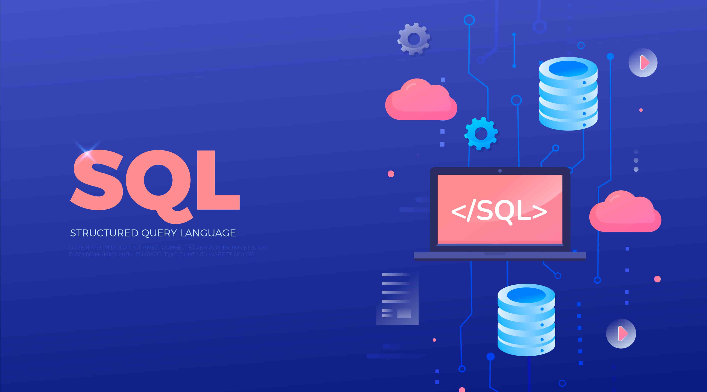

What I do
Data analysis and ML modeling end-to-end: from ingestion and cleaning in SQL to experiments in Python and deployment on AWS EC2.
I turn raw data into decisions that move the business, from messy SQL to deployed ML on AWS.


I'm Antonio Luis, and I spend my days moving data from raw to useful. My stack is Python and SQL, my habit is asking "why", and my goal is every insight ending in a decision.
Data analysis and ML modeling end-to-end: from ingestion and cleaning in SQL to experiments in Python and deployment on AWS EC2.
Honest metrics, simple models first, clean code and dashboards that tell a story. If it doesn't drive a decision, it doesn't ship.
Applied ML (RNNs, LSTMs), NLP, cloud automation and finding the one chart that makes the room go quiet.
Marketing to data, with detours that taught me very different things.
BA in Marketing and Market Research
Quantitative marketing foundation. First serious exposure to data analysis, consumer behaviour and applied business statistics.
Team Leader
Operations, scheduling, training and inventory. The real-world school of leadership, pressure and fast decision-making outside the textbook.
Master in Digital Marketing + Digital Analytics Junior
532h master in digital marketing. In parallel, my first analytics role: GA4 and GTM implementation and validation across client sites, dashboards, and tracking audits with Paid, SEO and CRO teams.
Digital Analyst
End-to-end digital analytics. Reporting on GA4, Power BI, Looker Studio and BigQuery. Tracking implementation with GTM and DataLayer. Behaviour analysis with Hotjar and Clarity. Currently expanding into SQL and Python.
Master in Data Science and AI · 400h
The formal jump into Data Science. Machine Learning, Explainable AI, Python, SQL, Tableau and cloud analytics. The bridge from the analyst world to the scientist one.
A pragmatic stack for analytics and ML, picked for what ships, not what sounds cool.
Pandas, NumPy, Scikit-learn, PyTorch. PostgreSQL and MySQL for anything that breathes data.
AWS EC2 for training and serving. Bash and Git for everything in between.
Classical ML to deep learning: RNNs, LSTMs and applied NLP.
Looker, GA4, Tag Manager, Adobe Analytics. Matplotlib for the quick "aha".
Custom SQL & NoSQL implementations, Hadoop extraction with HIVE, clean pipelines that don't wake you up at 3 AM.
A snapshot of what I've been building. Detailed write-ups landing soon. In the meantime, happy to walk you through any of them.

End-to-end model on 590K real transactions from the IEEE-CIS dataset. 434 features across transactions and identity signals (device, email domain, geolocation, time of day) feeding a Gradient Boosting classifier with 500 trees. The key move: at the default 0.5 threshold the model was too polite and let more fraud through than it caught. Dropping to 0.1 flips the trade-off and catches 60% of all fraud while only adding a verification step for 0.46% of legitimate users.
Time-series forecasting and pattern detection on sequential data. Training, evaluation and honest benchmarks against simpler baselines.
Request case study →Hybrid database layer designed for analytics workloads. Schema trade-offs, query patterns and the boring wins that make dashboards feel instant.
Request case study →A growing set of utilities I build for myself and release publicly. Privacy-first, no accounts, no tracking.
Redact sensitive data without it leaving your machine.
Most data leaks aren't hacks. They happen when someone uploads a screenshot with emails, user IDs or transaction IDs to the first "blur online" site they find. Blurr Tool runs entirely in your browser: drop an image or a PDF, draw rectangles over the sensitive bits, download. Zero uploads, zero tracking, zero fine print.
Got an idea for something small, useful and privacy-friendly? Ping me, I build them fast.
Suggest a toolFull-time, freelance or "can I pick your brain for 20 minutes". All fair game.